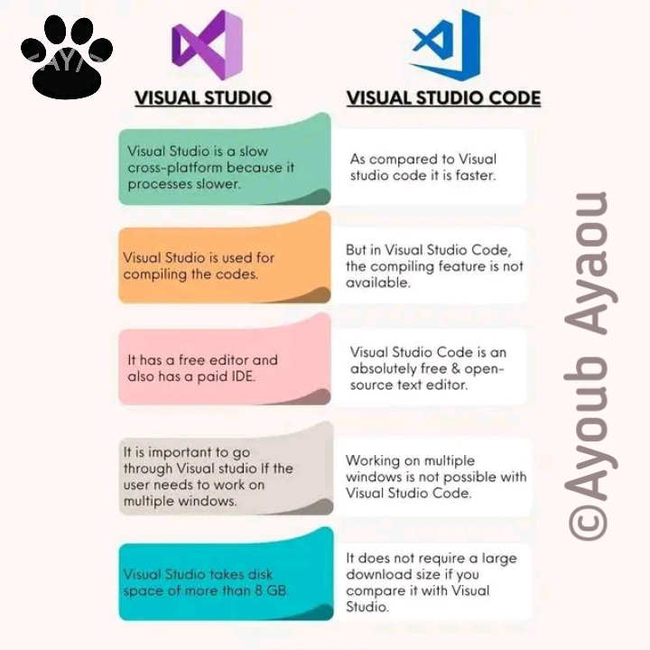

ما الفرق بين text editor و IDE؟
السلام عليكم ورحمة الله تعالى وبركاته في هذا المقال سنتحدث عن الفرق بين text editor و ide Ide إختصار لكلمة
integrated development environment يعني بيئة متكاملة يوفر لك أشياء جاهزة مثل تنسيق الكود وتشغيل الكود و
الكثير من الإضافات بدون تنزيلها كما يحدث في text editor الفرق بينهم في هذه النقطة محرر النصوص عند تشغيله أول
مرة لا يتوفر مثلا على إضافة تنسيق الكود يجب تنزيلها لتشتغل بها خلافا لل ide كل شيء فيه متكامل مثال واقعي
"هذا ما وجدته في مخي أتمني يوضحك لكم الفرق" نتخيل لدينا قطعة أرض فقط يمكننا وضع فيها الجزر هي قطعة صغيرة جدا
مثلا نريد إضافة الطماطم ماذا نحتاج أكيد نحتاج لقطعة أخرى متلا سوف نشتري قطعة أرض أخرى لوضع الطماطم هذه هي
extension التي تحملها أو الإمتدادات التي تحملها من المحرر وهذه الإمتدادات هي الأرض التي نشتريها لتنفد لنا
مهمة إضافية غير التي موجودة لدينا وهي وضع الطماطم أما بالنسبة لل ide فهي بسيطة جدا في ide تلك القطعتين من
الأرض متوفرة في الأول لا تحتاج لشراء قطعة أرض أخرى أو أي شيء من هذا القبيل أتمني أن يعجبكم المقال
هنا كمى ترى صورة للفرق مابين text editor and IDE من خلال مقارنة
visual studio and vs code
visual studio: عبارة عن IDE
visual studio code: عبارة عن text editor
